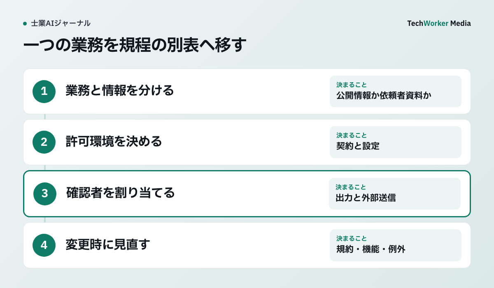

利用規程は業務・情報・操作・確認者を定める
利用規程には、どの業務で、どの情報を使い、何の操作を許し、誰が確認するかを書きます。その許可条件を見直す根拠として、米国国立標準技術研究所（NIST）の評価表を読みます。

NISTの表は日本の士業の法的義務を示すものではありません。記事では、狭い成功例を一般化しない、出典を継続確認する、安全機能を新しい利用条件で再確認する、という項目を規程の更新条件として使います。
公開情報の要約と依頼者情報の処理を分ける
「有料版なら可」のような製品名だけの規程を避け、4つの欄を組み合わせます。

| 欄 | 決める内容 |
|---|---|
| 業務 | 公開情報の要約、依頼者情報を含む下書き、申請、対外送信 |
| 情報 | 公開、内部、依頼者秘密、要配慮、個人番号、認証情報 |
| 操作 | 要約、抽出、生成、外部検索、ファイル共有、送信・登録 |
| 確認者 | 担当者、有資格者、案件責任者、情報管理者 |
同じ文書でも、公開済みの法令を要約する操作と、依頼者の事実を入れて助言案を作る操作ではリスクが違います。禁止情報は「機密情報」の一語で済ませず、個人番号、本人確認書類、健康・紛争情報、未公表の取引条件、認証情報など事務所の資料名で示します。
導入前から退職時までを一つの周期にする
規程には、導入前の評価から、顧客への説明、運用中の点検、退職・担当変更までを一続きの手順として定めます。
- 導入前評価。実務に近い検証問題で、正答だけでなく、根拠のない断定、秘密情報の送信、止めるべき場面を測ります。合格条件と即時停止条件を試験前に決めます。
- 顧客説明。AIを使う目的、対象情報、外部提供者、保存、確認者、費用、利用しない選択肢を案件開始前に説明します。同意の有無だけで守秘・個人情報・職業規則上の確認が済むわけではありません。
- 運用中の点検。モデル、契約、管理設定、連携先、対象業務が変わったら再評価します。誤りは文面修正で閉じず、原因と再発試験を記録します。
- 退職・担当変更。案件引継ぎとアクセス停止を分けます。共有領域の所有者、個人領域の案件資料、連携アプリ、APIキー、ログ、保持期限を一覧で確認します。
顧客説明の記録は、AIの利用可否だけでなく、説明日、説明者、顧客の質問、個別の条件を残します。退職時はアカウントを止める前に正当な案件資料を共有領域へ移し、停止後に再ログインできないことと、転送・連携が残らないことを確認します。
ログは秘密情報の保管庫にしない
利用者、日時、業務区分、ツール、入力情報区分、用途、確認者、外部送信、削除期限を残します。
プロンプトと回答の全文を常に保存する必要はありません。全文が必要な業務だけを定め、閲覧権限と保持期間を別にします。監査に必要な情報を減らしすぎず、依頼者秘密を無期限に複製しない設計にします。
月次点検では、例外申請、未確認の対外出力、禁止情報の入力、退職者の権限、期限を過ぎたログを確認します。利用件数の増加は安全性の証拠ではありません。重大な誤り、差戻し、未承認利用、削除未完了を分けて追います。
よくある質問
禁止を定めるだけでは運用中の安全性は確認できません。許可範囲と禁止範囲、例外申請、確認者を具体化し、利用実態を点検します。
利用目的、扱う情報、外部提供者、保存、確認者、費用、利用しない選択肢を、案件開始前に説明します。
足りません。共有領域の所有者、個人領域の案件資料、連携アプリ、APIキー、ログ、保存期限を確認し、案件の引継ぎとアクセス停止を別々に完了させます。
一次情報と確認範囲
資料確認日：2026年10月6日。NISTは任意資料であり、日本の各士業法、職業規則、個人情報保護法の確認を置き換えません。